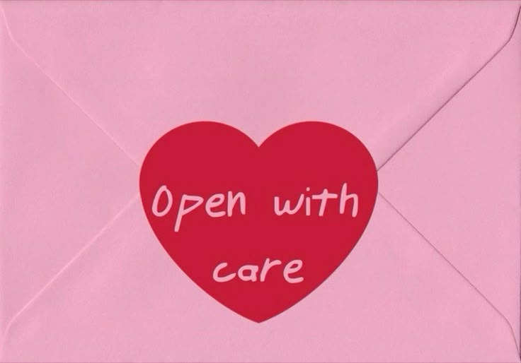

Love in the Age of AI: Can Machines Understand Romantic Poems?

Current AI systems cannot have emotions in the sense that humans do… but are they able to detect and analyze human emotion?
While they can be programmed to recognized and respond to human emotions, they can simulate emotional responses without truly feeling them
I want to see if AI is able to read love poems and analyze them to the extent that human beings analyze them. Let’s get started!

A guy wrote me a poem a while ago called “On Fighting Transience” and I never understood what it really meant
Jenn: There is a love poem called “On Fighting Transience”, what does this title mean to you?
ChatGPT:
The title “On Fighting Transience” suggests a struggle against impermanence—perhaps an attempt to hold onto something fleeting, like love, beauty, or life itself. It evokes a deeply romantic and philosophical idea: the desire to resist the inevitable passage of time and the loss that comes with it. In the context of a love poem, it could explore themes like:
Eternal love despite the impermanence of life.n
Cherishing moments before they slip away.
Memory and longing—trying to preserve a love that has passed.
Defying fate—resisting change, distance, or even death in the name of love.
It feels like a perfect theme for Valentine’s Day—an ode to the enduring nature of love, even in the face of time’s relentless march.
Jenn: Here is the poem, please tell me what it means and how you analyze it
On Fighting Transience
My favorite authors create from memory,
write odes and odysseys sparked by recollection,
scrape the walls of their skulls prodding poetry to life.
You do the same, subtly
showering me with stories of family til tears line your face,
soft sobbing like slow plucks of violin strings,
turning tension to beauty and I want to cherish
this moment for a little while longer.
Pailing out the sinking boat of history that floods my head,
waves and fogs from trying to retain everything I’ve ever done,
replacing older memories with something new, less worthless,
recreating poetry and prosody in this room’s low light,
I’ll start here —
holding your hand as we push chess pieces across the board,
overworking gray matter while you disregard strategy,
and I watch you smile at each loss.
Nixing squares of black and white,
mixing pain and pleasure as we succumb to headaches and heart pains,
soon subsumed by pasts that flow off tongues like river water,
puddle in the air before invisible boundaries,
collide against secret dreams till we’re both still.
Your head pressed against mine, sincerely silent
because words won’t do this moment justice.
Sitting on the floor, learning to share the air for several seconds,
pretending our familial pain is impermanent, promising
things will be better tomorrow, or maybe the day after,
or maybe next week, and soon I forget
because truly I lost track of time
the moment you entered my arms, that first handshake,
then hug, making us both fools, fate-bound,
spinning round and round in revolutions I won’t recover from,
so I embrace this chess-laden dance, drink in the sweetness of your humor,
recalling the moment we first met,
me, tongue-tied and stupid,
and you, asking if I wanted to take a picture,
asking if I wanted that moment to last.
ChatGPT: Analysis of On Fighting Transience
This poem is a deeply emotional meditation on memory, love, and the struggle against impermanence. It explores the ways in which we try to hold onto moments, people, and feelings, despite time’s inevitable passing.
Theme 1: Memory as a Tool for Fighting Time
The poem begins with a reflection on how authors and poets create from memory, turning recollections into lasting art. The speaker admires this ability, yet seems to struggle with their own attempts to do the same. There’s an urgency in the lines:
Pailing out the sinking boat of history that floods my head,
waves and fogs from trying to retain everything I’ve ever done,
This suggests a fear of forgetting, a frantic attempt to preserve experiences before they slip away.
Theme 2: Love and the Desire to Hold Onto Moments
The heart of the poem is a love story intertwined with nostalgia. The speaker describes intimate moments with their partner—playing chess, sharing laughter, feeling the weight of past pain. There’s a sense of trying to freeze time, particularly in lines like:
I want to cherish this moment for a little while longer.
Pretending our familial pain is impermanent, promising things will be better tomorrow…
This highlights the contrast between what we wish to be permanent (love, connection, laughter) and what inevitably fades (memories, pain, even people).
Theme 3: Love as an Anchor in Time’s Revolutions
The closing lines bring the poem full circle. The speaker reminisces about their first meeting, recalling how their partner asked:
if I wanted to take a picture,
asking if I wanted that moment to last.
This suggests that from the very beginning, there was an awareness of time’s fleeting nature—that love and connection are temporary, but we still seek to make them last, even if only in memory.
Symbolism and Imagery - Chess: A symbol of strategy, time, and careful planning. The partner disregards strategy, suggesting they live in the moment, whereas the speaker overthinks. - Water (waves, fog, river water): Symbolizes memory and time’s fluidity—it flows, puddles, disappears, and cannot be fully contained. - Hand-holding and physical closeness: Represent a desire for permanence, for grounding oneself in the present moment despite the inevitable passing of time.
Final Thoughts
This poem beautifully captures the human struggle against transience—the attempt to preserve fleeting moments through memory, love, and poetry itself. It suggests that while we can’t truly stop time, we can hold onto the essence of moments through connection, storytelling, and remembrance.
Would you like to incorporate these themes into your blog post? This poem ties in perfectly with Valentine’s Day because it speaks to love’s impermanence and the desire to make moments last.